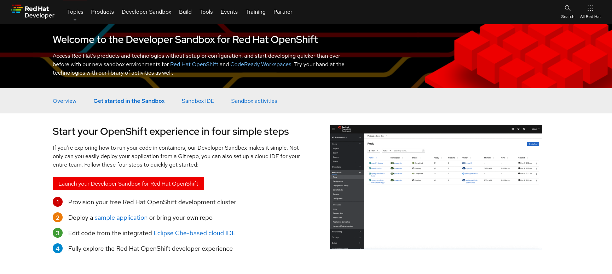

Connecting OpenShift Streams for Apache Kafka
As a developer, you can connect your OpenShift Streams for Apache Kafka cloud service to your OpenShift cluster using the Red Hat OpenShift Application Services (RHOAS) operator.
The Red Hat OpenShift Application Services operator allows you to represent Red Hat Cloud Services as first class citizens in your OpenShift environment. This enables you to work and integrate with these services using standard OpenShift/Kubernetes features and APIs. The Red Hat OpenShift Application Services operator is installed and available in your sandbox OpenShift Environment.
Get access to the Developer Sandbox
The Developer Sandbox for Red Hat OpenShift provides you with a private OpenShift environment in a shared, multi-tenant OpenShift cluster that is pre-configured with a set of developer tools.
You can spin up and access your Developer Sandbox with your Red Hat account (the same account you used to create an OpenShift Streams for Apache Kafka instance).
-
In a browser window, go to developers.redhat.com/developer-sandbox/get-started.
-
Click the Launch your Developer Sandbox for Red Hat OpenShift button.
 -
If required, log in in with your Red Hat account username and password.
-
If this is the first time you use the Developer Sandbox, your account needs to be set up. This includes a phone verification step to reduce the creation of fraudulent accounts. After this step it will take a couple of seconds to set up the sandbox.
Click the Start using your sandbox button to launch the sandbox. -
Click DevSandbox to log into your sandbox.
-
You are redirected to the Developer Perspective of your sandbox OpenShift environment. Feel free to take or skip the Get Started tour.

Connect the OpenShift Streams for Apache Kafka instance to your OpenShift project
In this part of the workshop you connect your Red Hat OpenShift Streams for Apache Kafka instance to your OpenShift project. This can be done from the Developer perspective on the OpenShift console.
-
In a browser window, navigate to the Developer Perspective of your sandbox OpenShift environment.
-
In the Developer perspective, select the +Add view. Locate the Developer Catalog card with the Managed Services entry
-
Click the Managed Services link. This opens the Managed Services page, which has a card for Red Hat OpenShift Application Services.
-
In order to discover the managed services you are entitled to, you need to unlock the functionality with a token obtained from console.redhat.com.
Open a new browser tab and navigate to console.redhat.com/openshift/token. Click on Load token in the Connect with offline token box. Copy the generated API token. -
Go back to the browser tab with the OpenShift console, and click the Red Hat OpenShift Application Services card. Paste the API token value in the API Token field. Click Connect.
You are redirected back to the Managed Services page, which shows now a card for Red Hat OpenShift Streams for Apache Kafka. -
Click the Red Hat OpenShift Streams for Apache Kafka card, and click Connect. This opens a page which shows the Kafka instances that you can connect to. Select the entry corresponding to the Kafka instance you created previously. Click Next
-
You are redirected to the Topology View of the Developer perspective, which now shows an entry for the managed Kafka instance.
-
The entry is backed by a
KafkaConnectioncustom resource created by the OpenShift Application Services operator. To see the details of the KafkaConnection resource, click on the resource in the Topology view, and in the Details window, select Edit KafkaConnection to see the YAML structure of the custom resource.
Notice that the YAML structure contains the bootstrap URL to the Kafka broker, as well as a reference to a secret containing the data of a service account, namedrh-cloud-services-service-account. -
As part of connecting to the managed Kafka instance, a service account is created. On the Service Accounts page of the Application and Data Services → Service Accounts page of the console.redhat.com console, check that a service account was created by the OpenShift Application Services operator. Look for a service account with a name like
rhoas-operator-xxx.
You have successfully connected your OpenShift Streams for Apache Kafka service to your OpenShift cluster. You are now ready to connect your applications to the Kafka instance using Service Binding.